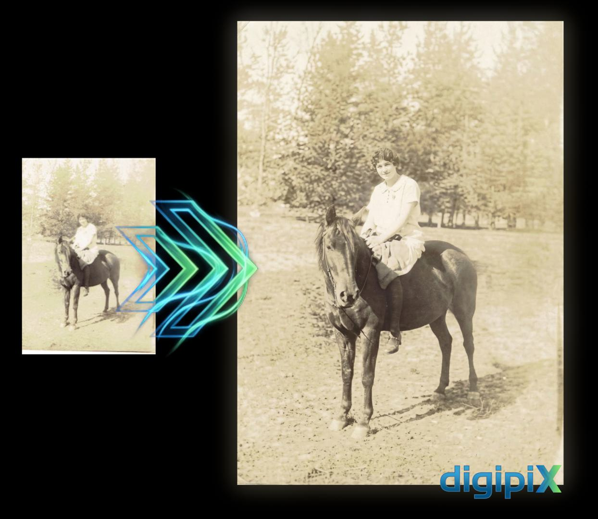
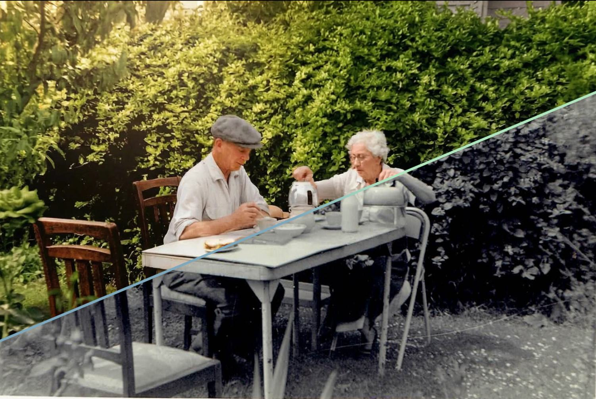

Tap or click to view larger
← swipe to navigate →
← swipe to navigate →
← swipe to navigate →
← swipe to navigate →
Cleaning up scratches, stains, and artifacts while increasing the visible detail in the image.
Combine photographs together to unite people or places as never before possible.

Breathe new life into your photographs with colour.
(All prices are GST inclusive)
I use the very latest machine learning tools to help me breathe new life into historical photographs. I can restore and enhance details in damaged or faded images to an extent that has only been achievable in the last few months. You can even unite people and places in ways never before possible. Send a scan or photo of your historical image with a description of what you would like and DigiPix will do the rest.
"Thanks Caleb for restoring a treasured photo from a long time ago. It was badly damaged and you brought it back to life with amazing colours and detail. Thanks again, much appreciated."
— Hans
Almost any condition can be worked with — fading, tears, stains, water damage, scratches, and heavy cracking are all things I deal with regularly. The worse the damage, the more dramatic the result. Just send through what you have and I'll let you know what's possible.
A high-resolution scan is ideal — most modern flatbed scanners or printer-scanners work well. If you don't have a scanner, a well-lit phone photo taken flat on a surface (avoid angles and shadows) is usually fine. The higher the resolution you can provide, the better the final result.
This service lets you combine people or places from separate photographs into a single image — for example, bringing together a family portrait where the original photos were taken years apart, or placing relatives who never met side by side. Get in touch with your idea and I'll let you know if it's achievable.
Most single-photo restorations are turned around within 1–3 business days. More complex work — heavily damaged images or Reframing History composites — may take a little longer. I'll give you a clear timeframe when you get in touch.
Your images are used solely to complete your restoration and are not shared or used for any other purpose. Once your final files are delivered, your original images are deleted from my system.
Yes — the $10 per additional photo pricing is designed exactly for this. Get in touch with the size of your collection and I can put together a quote.
Email: caleb@digipix.co.nz